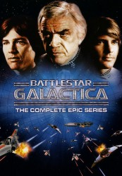

")
Alternativ: Battlestar Galactica
 
 IMDB-Wertung: 7.1 / 10
IMDB-Wertung: 7.1 / 10  Metascore:
Metascore: 
Nach einem tausendjährigen Krieg zwischen den Menschen und den Zylonen ist ein Frieden in Sicht. Die 12 bekannten Kolonien der Menschen planen die Unterzeichnung eines Friedensvertrages mit der feindlichen Roboter-Rasse der Zylonen. Doch die Menschen werden von Graf Baltar verraten. Die Kolonien und alle Kampfsterne bis auf die Galactica, werden zerstört.Unter Führung von Commander Adama macht sich der letzte Kampfstern Galactica mit einem Konvoi von Flüchtlingen, die auf 220 Schiffen zusammengepfercht sind, auf eine Reise durchs Universum auf der Suche nach einer neuen Heimat und dem verschollenen, sagenumwobenen 13. Stamm. Ziel der Reise ist der Heimatplanet der Menschen, die Erde.
Jahr: 1978
Dauer: 139 Minuten
FSK:
Land: USA Studio: ABCTonspuren: DD2.0 - ,
Untertitel: Deutsch,
Auflösung: 720p (960x720) Größe: 3184 MB
Genre: Action, Sci-Fi, Abenteuer, TV-Serie
Regisseur: Rod Holcomb, Christian I. Nyby II, Alan J. Levi, Daniel Haller, Donald P. Bellisario, Vince Edwards, Richard A. Colla, Winrich Kolbe
Drehbuch: Jim Thomas
Soundtrack:
Darsteller:
 Lorne Greene als Commander Adama
Lorne Greene als Commander Adama John Colicos als Count Baltar
John Colicos als Count Baltar Anne Lockhart als Lieutenant Sheba
Anne Lockhart als Lieutenant Sheba Patrick Macnee als Opening Credit Announcer
Patrick Macnee als Opening Credit Announcer George Murdock als Dr. Salik
George Murdock als Dr. Salik Ed Begley Jr. als Flight Sergeant Greenbean
Ed Begley Jr. als Flight Sergeant Greenbean Jane Seymour als Serina
Jane Seymour als Serina Richard Lynch als Wolfe
Richard Lynch als Wolfe Anthony De Longis als Taba
Anthony De Longis als Taba Britt Ekland als Tenna
Britt Ekland als Tenna Olan Soule als Carmichael
Olan Soule als Carmichael Alex Hyde-White als Cadet Bow
Alex Hyde-White als Cadet Bow Lew Ayres als President Adar
Lew Ayres als President Adar Wilfrid Hyde-White als Anton
Wilfrid Hyde-White als Anton Bruce Glover als Megan
Bruce Glover als Megan Paul Fix als Commander Kronus
Paul Fix als Commander Kronus Brock Peters als Chief Opposer Solon
Brock Peters als Chief Opposer Solon William Bryant als Fire Leader
William Bryant als Fire Leader John Fink als Dr. Payne
John Fink als Dr. PayneDatei: X:\HD-Serien\Kampfstern Galactica\S01\Kampfstern Galactica S01E01 Kampfstern Galactica Pilot.mkv seit 20.04.2017
Festplatte: HD Serien(I-ST)
 Es gibt insgesamt 182 Filme in der Gruppe 'HD-Serien'
Es gibt insgesamt 182 Filme in der Gruppe 'HD-Serien'